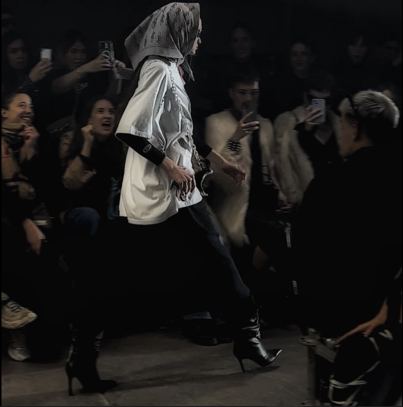

El universo post-apocalíptico de BULLBENNY
Boquiabierta. Así quedé después del desfile de Bullbenny. Psywar es el nombre de la última colección del tridente creativo detrás de la marca. Siempre fieles a su esencia urban-wear, Bullbenny nos invitó a formar parte de un universo post-apocalíptico, cibernético y neo-punk.